# Read the data
data <- read.csv("Data.csv", header=TRUE)Percent Damage
Analysis info
Looking at differences in soybean browsing percent damage based on Treatment (0:control or 1:tannins) over time. We included WAT (Week after application) as a predictor variable and Plot and Field as nested random effects.
Percent Damage variable calculation = total number of petioles (leaf stems) supporting leaves damaged by deer divided by the total number of petioles on the plant
Response Variable:
- Percent Damage
Predictor Variables:
- Treatment (0: Control, 1: Tannins)
- WAT (Week After Application: 1-4)
- Plot (1-20)
- Field (1-20)
Below is our process of fitting our data to the best possible model.
Initial Percent Damage Analysis
Loading and Subsetting Data
Reading in Data Source
Subsetting data to:
1) Only include observations from plants exposed to browsing.
2) Convert predictor variables to factors with “levels”.
3) Remove rows with missing Height values (missing values = dead plant or sampling error).
4) Only include measurements from weeks 1 through 4
# Subset to remove Enclosure values
data <- data[data$Enclosure == "0", ]
# Convert categorical variables to factors
data$Field <- as.factor(data$Field)
data$Plot <- as.factor(data$Plot)
data$Treatment <- as.factor(data$Treatment)
data$Enclosure <- as.factor(data$Enclosure)
# Remove rows with missing Height values
# Remove values where WAT = 0
data <- data |>
filter(!is.na(Height)) |>
filter(WAT != 0)Exploratory Data Analysis
Calculating and displaying mean soybean Percent Damage for treatments across weeks after application.
# Calculate mean Percent Height for each Treatment and WAT combination
summary_data <- data |>
group_by(Treatment, WAT) |>
summarise(mean_pd = mean(PercentDamage, na.rm = TRUE))`summarise()` has grouped output by 'Treatment'. You can override using the
`.groups` argument.# Displaying mean soybean height for treatments across Weeks after application
print(summary_data)# A tibble: 8 × 3
# Groups: Treatment [2]
Treatment WAT mean_pd
<fct> <int> <dbl>
1 0 1 5.92
2 0 2 8.90
3 0 3 6.17
4 0 4 5.37
5 1 1 2.19
6 1 2 4.69
7 1 3 5.05
8 1 4 5.00Plotting “Mean Height by Treatment Over Time”
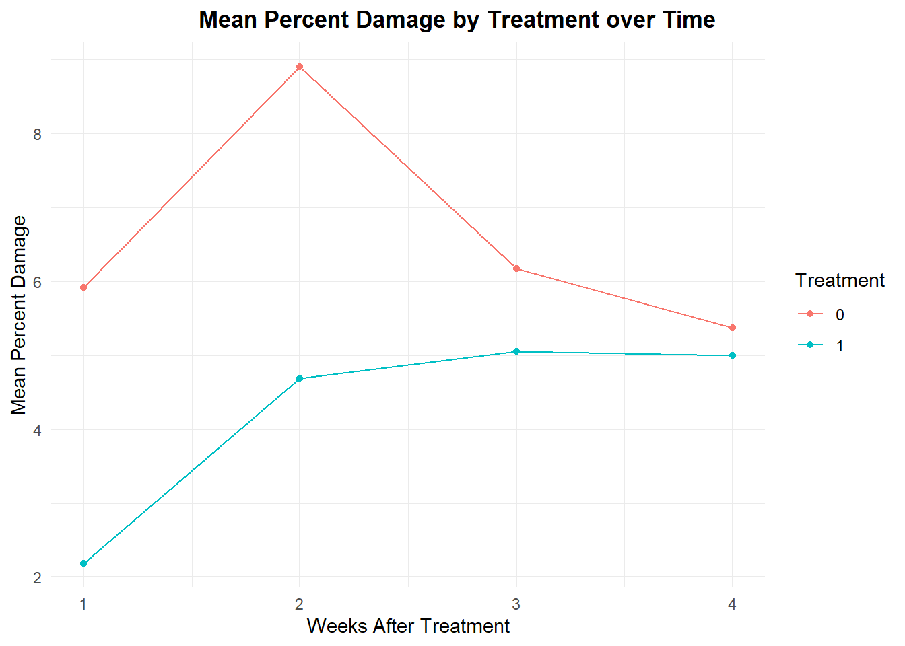
Side by side bar plots
ggplot(summary_data, aes(x = as.factor(WAT), y = mean_pd, fill = factor(Treatment, levels = c(0, 1), labels = c("0%", "10%")), group = Treatment)) +
geom_bar(stat = "identity", position = position_dodge(width = 0.8), width = 0.6) + # Side-by-side bars
# Black outline trendlines (not included in the legend)
geom_smooth(
aes(group = Treatment),
method = "lm",
se = FALSE,
size = 2, # Thicker black line for the outline
color = "black",
show.legend = FALSE # Remove trendlines from the legend
) +
# Colored trendlines (not included in the legend)
geom_smooth(
aes(color = factor(Treatment, levels = c(0, 1), labels = c("0%", "10%"))),
method = "lm",
se = FALSE,
size = 0.8, # Slightly thinner line for the color
show.legend = FALSE # Remove trendlines from the legend
) +
labs(
x = "Weeks After Tannin Application",
y = "Mean Percent Soybean Damage",
fill = "Tannin Concentration" # Legend title update
) +
theme(
legend.position = "top",
plot.title = element_text(hjust = 0.5, size = 14, face = "bold"), # Center title and bold it
plot.margin = margin(t = 20, b = 20, l = 20, r = 20), # Increase space between the figure and the edges
axis.text.x = element_text(size = 12) # Adjust x-axis text size if necessary
)Warning: Using `size` aesthetic for lines was deprecated in ggplot2 3.4.0.
ℹ Please use `linewidth` instead.`geom_smooth()` using formula = 'y ~ x'
`geom_smooth()` using formula = 'y ~ x'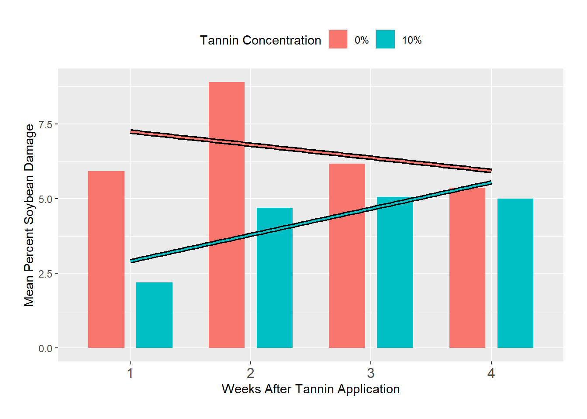
Decrease in mean of untreated (Treatment = 0) Percent Damage vales after week 2 because of the rate of browsing is lower then the rate of stem growth. For example, a plant in week one may experience browsing on 2/7 stems resulting in 28% of total stems browsed but in week two the same plant may have grown two new stems without experiencing any more browsing resulting a reduction of browsing on total number of stems to 22%.
Scatter plot’s showing the distribution of Percent Damage over time.
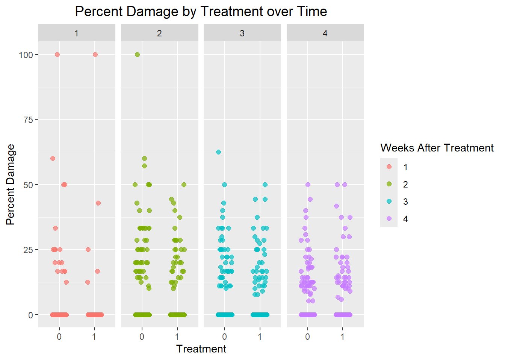
Histogram showing the distribution of Percent Damage over time.
ggplot(data, aes(x = PercentDamage, fill = factor(Treatment))) +
geom_histogram(binwidth = 10, color = "black", alpha = 0.7) + # Histogram with bins of width 10
facet_grid(Treatment ~ WAT) + # Facet rows by Treatment and columns by WAT
labs(
title = "Distribution of Percent Damage by Treatment and Weeks After Treatment",
x = "Percent Damage",
y = "Count",
fill = "Treatment" # Legend title for the fill aesthetic
) +
theme(
legend.position = "right", # Place legend on the right
plot.title = element_text(hjust = 0.5, size = 14), # Center title and increase font size
strip.text = element_text(size = 12) # Adjust facet label text size
)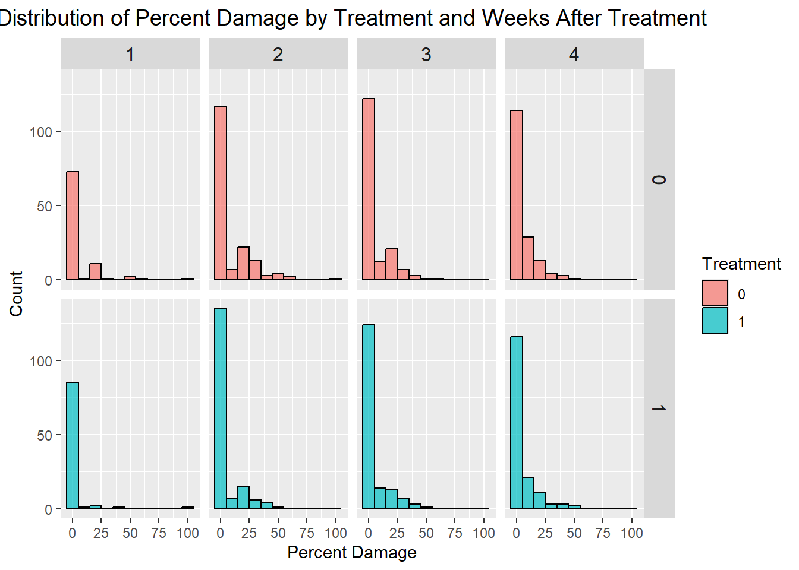
Scatter plot
ggplot(data, aes(x = factor(WAT), y = PercentDamage, color = factor(Treatment), group = Treatment)) +
geom_point(position = position_jitter(width = 0.2, height = 0), alpha = 0.7) + # Jittered scatter points
geom_smooth(method = "lm", se = FALSE, linetype = "dashed", size = 1) + # Add a trend line
facet_grid(~ Treatment) + # Facet columns by Treatment
labs(
title = "Scatter Plot of Percent Damage by Treatment with Trend Lines",
x = "Weeks After Treatment",
y = "Percent Damage",
color = "Treatment" # Legend title for the color aesthetic
) +
theme(
legend.position = "right", # Place legend on the right
plot.title = element_text(hjust = 0.5, size = 14), # Center title and increase font size
strip.text = element_text(size = 12) # Adjust facet label text size
)`geom_smooth()` using formula = 'y ~ x'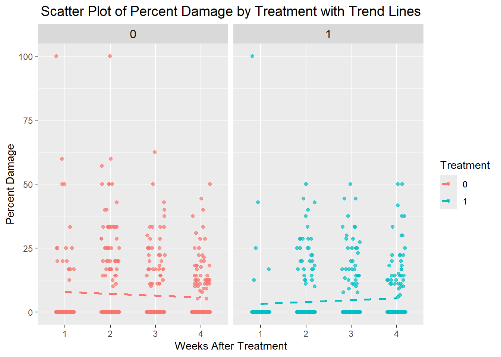
The distribution of the data may indicate that a zero-inflated model is necessary.
Simple Analysis
Fitting models for simple linear Regression
# Linear Regression for Height
# Null Model
lm_pd_1 <- lm(formula = PercentDamage ~ Treatment, data = data)
# Partial Model
lm_pd_2 <- lm(formula = PercentDamage ~ Treatment * WAT, data = data)
# Full Model
lm_pd_3 <- lm(formula = PercentDamage ~ Treatment * WAT * Field, data = data)Choosing the best model
#ANOVA for differences in models
anova(lm_pd_1, lm_pd_2, lm_pd_3)Analysis of Variance Table
Model 1: PercentDamage ~ Treatment
Model 2: PercentDamage ~ Treatment * WAT
Model 3: PercentDamage ~ Treatment * WAT * Field
Res.Df RSS Df Sum of Sq F Pr(>F)
1 1164 169582
2 1162 168922 2 660.4 2.3205 0.09868 .
3 1154 164204 8 4717.8 4.1445 6.765e-05 ***
---
Signif. codes: 0 '***' 0.001 '**' 0.01 '*' 0.05 '.' 0.1 ' ' 1# AIC to pick the best model
AIC(lm_pd_1, lm_pd_2, lm_pd_3) df AIC
lm_pd_1 3 9121.362
lm_pd_2 5 9120.812
lm_pd_3 13 9103.784Model lm_pd_3 has the lowest AIC score.
The AIC score is very high, model most likely doesn’t fit the data well. The scatter plots and histograms above indicate many values at zero, may need to fit a zero inflated model. To account for the design of the experiment, will most likely need block by Field/Plot. A zero inflated mixed-effects model may be the best option.
summary(lm_pd_3)
Call:
lm(formula = PercentDamage ~ Treatment * WAT * Field, data = data)
Residuals:
Min 1Q Median 3Q Max
-16.782 -5.841 -4.413 -1.501 94.531
Coefficients:
Estimate Std. Error t value Pr(>|t|)
(Intercept) 4.7977 2.4785 1.936 0.05314 .
Treatment1 -0.2429 3.5051 -0.069 0.94476
WAT -0.1922 0.8569 -0.224 0.82260
Field2 16.4344 3.9254 4.187 3.05e-05 ***
Field3 0.9713 3.1437 0.309 0.75740
Treatment1:WAT 0.2642 1.2118 0.218 0.82742
Treatment1:Field2 -15.5537 5.5467 -2.804 0.00513 **
Treatment1:Field3 -5.4721 4.4569 -1.228 0.21978
WAT:Field2 -4.2582 1.3602 -3.130 0.00179 **
WAT:Field3 0.7017 1.0899 0.644 0.51984
Treatment1:WAT:Field2 4.2199 1.9198 2.198 0.02814 *
Treatment1:WAT:Field3 0.6731 1.5499 0.434 0.66419
---
Signif. codes: 0 '***' 0.001 '**' 0.01 '*' 0.05 '.' 0.1 ' ' 1
Residual standard error: 11.93 on 1154 degrees of freedom
Multiple R-squared: 0.03975, Adjusted R-squared: 0.0306
F-statistic: 4.343 on 11 and 1154 DF, p-value: 2.155e-06No model significance of Treatment or WAT variables as well as Treatment:WAT interaction.
Checking Model Assumptions
Using a QQ plot to look for non-normal distributions of the model’s plotted residuals.
plot(lm_pd_3)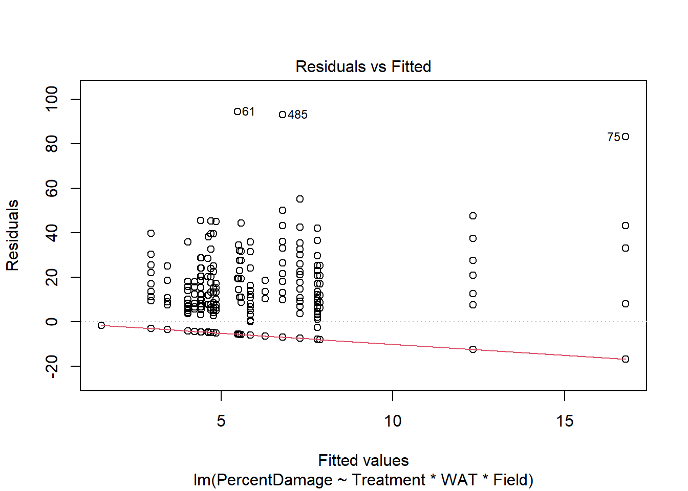
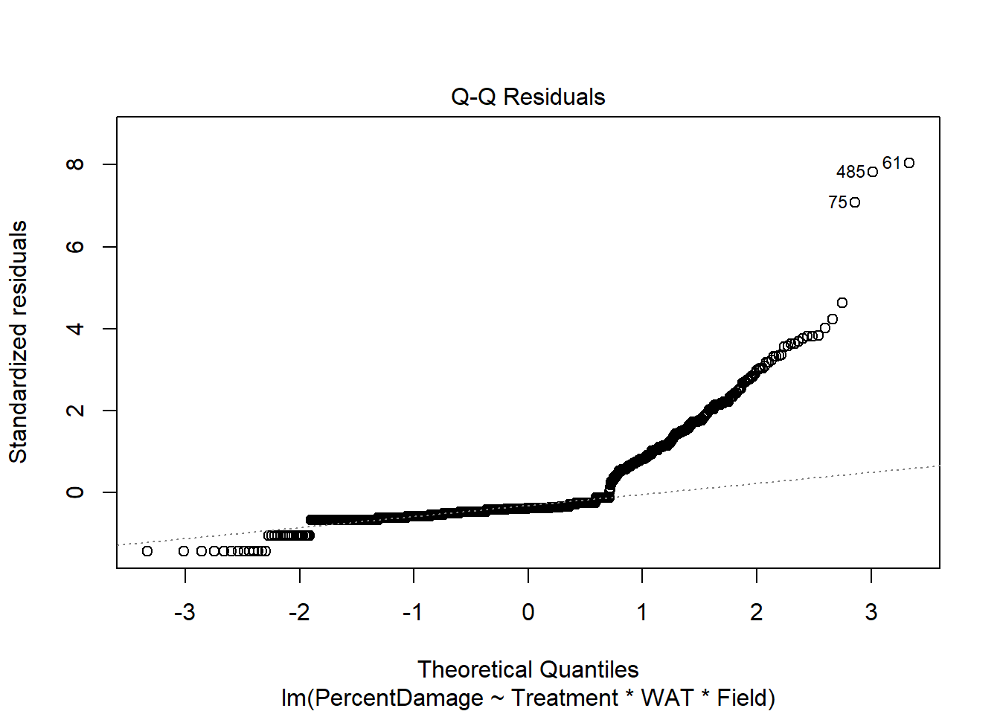
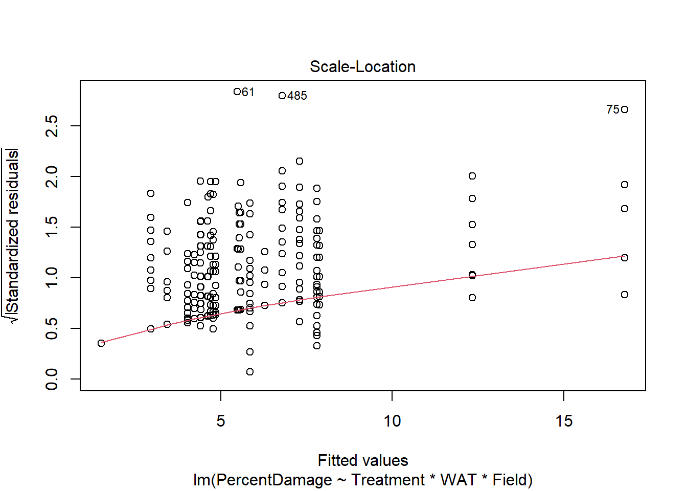
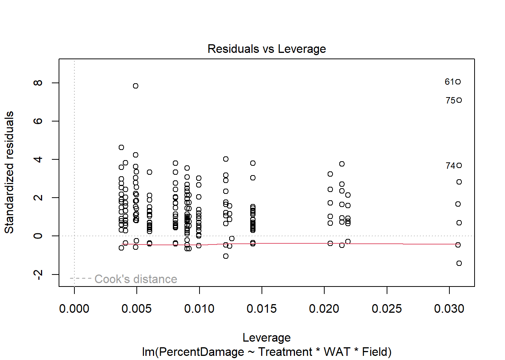
Looking at the plotted Q-Q Residuals, data does appear to be non-normal with outliers.
A better fitting model will provide more accurate results. As mentioned earlier a zero-inflated mixed effects model may be fit the data better.
Outlier observations 61, 485, and 75 may need to be removed.
More In-depth Analysis
Fitting a Mixed-Effects Model for Percent Damage using the glmmTMB Package.
# Mixed-Effects Model for Percent Damage
# Null Model
mem_pd_1 <- glmmTMB(PercentDamage ~ Treatment, data = data)
# Partial Model 1
mem_pd_2 <- glmmTMB(PercentDamage ~ Treatment * WAT, data = data)
# Partial Model 2
mem_pd_3 <- glmmTMB(PercentDamage ~ Treatment * WAT * Field, data = data)
# Full Model with random effects for Field
mem_pd_4 <- glmmTMB(PercentDamage ~ Treatment * WAT + (1 | Field), data = data)
# Full Model with random effects for Field/Plot
mem_pd_5 <- glmmTMB(PercentDamage ~ Treatment * WAT + (1 | Plot) + (1 | Field), data = data)Model Comparison using ANOVA
# Compare models using likelihood ratio test
anova(mem_pd_1, mem_pd_2, mem_pd_3, mem_pd_4, mem_pd_5)Data: data
Models:
mem_pd_1: PercentDamage ~ Treatment, zi=~0, disp=~1
mem_pd_2: PercentDamage ~ Treatment * WAT, zi=~0, disp=~1
mem_pd_4: PercentDamage ~ Treatment * WAT + (1 | Field), zi=~0, disp=~1
mem_pd_5: PercentDamage ~ Treatment * WAT + (1 | Plot) + (1 | Field), zi=~0, disp=~1
mem_pd_3: PercentDamage ~ Treatment * WAT * Field, zi=~0, disp=~1
Df AIC BIC logLik deviance Chisq Chi Df Pr(>Chisq)
mem_pd_1 3 9121.4 9136.5 -4557.7 9115.4
mem_pd_2 5 9120.8 9146.1 -4555.4 9110.8 4.5495 2 0.1028
mem_pd_4 6 9121.2 9151.5 -4554.6 9109.2 1.6598 1 0.1976
mem_pd_5 7 9070.3 9105.7 -4528.1 9056.3 52.8970 1 3.515e-13 ***
mem_pd_3 13 9103.8 9169.6 -4538.9 9077.8 0.0000 6 1.0000
---
Signif. codes: 0 '***' 0.001 '**' 0.01 '*' 0.05 '.' 0.1 ' ' 1Model Comparison using AIC
# AIC comparison
AIC(mem_pd_1, mem_pd_2, mem_pd_3, mem_pd_4, mem_pd_5) df AIC
mem_pd_1 3 9121.362
mem_pd_2 5 9120.812
mem_pd_3 13 9103.784
mem_pd_4 6 9121.153
mem_pd_5 7 9070.256ANOVA and AIC indicate that mem_pd_5 is the best model
Summary of best fitted model!
# Full model with nested random effects
summary(mem_pd_5) Family: gaussian ( identity )
Formula: PercentDamage ~ Treatment * WAT + (1 | Plot) + (1 | Field)
Data: data
AIC BIC logLik deviance df.resid
9070.3 9105.7 -4528.1 9056.3 1159
Random effects:
Conditional model:
Groups Name Variance Std.Dev.
Plot (Intercept) 1.070e+01 3.271e+00
Field (Intercept) 6.703e-07 8.187e-04
Residual 1.342e+02 1.158e+01
Number of obs: 1166, groups: Plot, 20; Field, 3
Dispersion estimate for gaussian family (sigma^2): 134
Conditional model:
Estimate Std. Error z value Pr(>|z|)
(Intercept) 8.6355 1.6802 5.139 2.76e-07 ***
Treatment1 -6.0038 2.3807 -2.522 0.0117 *
WAT -0.7358 0.4598 -1.600 0.1095
Treatment1:WAT 1.4051 0.6548 2.146 0.0319 *
---
Signif. codes: 0 '***' 0.001 '**' 0.01 '*' 0.05 '.' 0.1 ' ' 1Model significance for Treatment variable as well as the Treatment:WAT interaction.
Model Diagnostics
Extracting model residuals
# Extract residuals
residuals <- resid(mem_pd_5)
fitted <- fitted(mem_pd_5)
# Plot residuals vs fitted values
plot(fitted, residuals, xlab = "Fitted values", ylab = "Residuals",
main = "Residuals vs Fitted")
abline(h = 0, col = "red")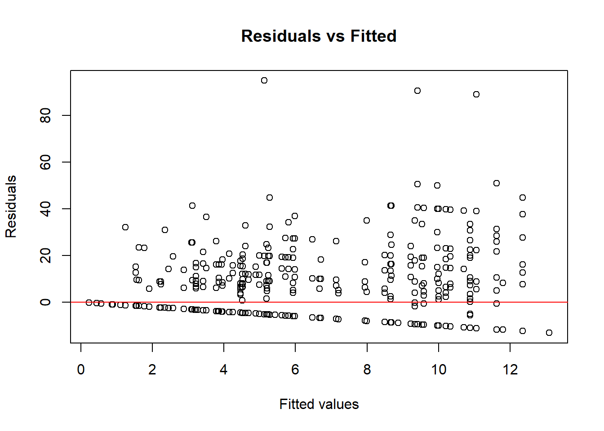
qqnorm(residuals)
qqline(residuals, col = "red")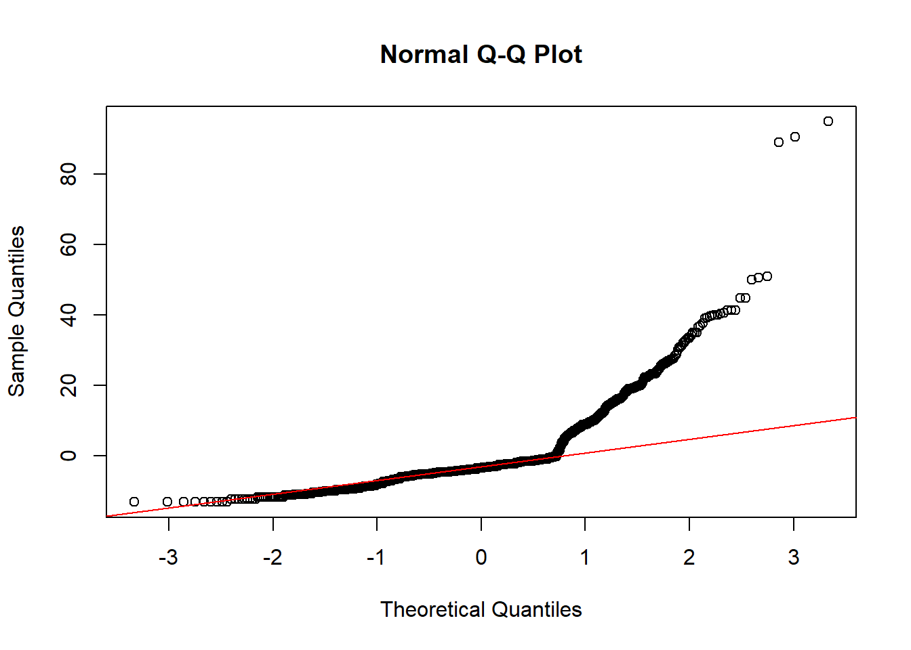
Although this model shows significance for treatment and the treatment:WAT interaction, the high AIC and plotted residuals are troubling (better, but still troubling).
Fitting a Zero Inflated Mixed-Effects Model for Percent Damage using the glmmTMB Package.
The glmmTMB package was designed for zero-inflated count data (i.e., data containing more zeros than would be expected from the standard error distributions in other mixed models). Models that ignore zero-inflation, or treat it like over dispersion, tend to resulted in biased parameter estimates (Harrison, 2014).
Rounding Percent Damage values for modeling.
data <- data |>
mutate(pd_round = round(PercentDamage))Fitting zero-inflated mixed effects models using a poisson distribution. Originally, I included a model with a negative binomial distribution but had model convergence problems resulting in non-positive-definite Hessian matrix = NA values for likelihood/AIC/etc.
# diagnoses of lowest AIC negative binomial zero-inflated model (zi_nb_pd_5)
# Unusually large coefficients (|x|>10):
# zi~(Intercept) zi~pd_round
# 22.56691 -13.57655 Model diagnosis: Large negative coefficients in zi (log-odds of zero-inflation), dispersion, or random effects (log-standard deviations) suggest unnecessary components (converging to zero on the constrained scale); large negative and/or positive components in binomial or Poisson conditional parameters suggest (quasi-)complete separation. Large values of nbinom2 dispersion suggest that you should use a Poisson model instead.
Fitting Zero Inflated Poisson Mixed-Effects Model
# Zero Inflated Poisson Mixed-Effects Model for Percent Damage
# Doing my due diligence and fitting all possible models
# Null Model
zi_pois_pd_1 <- glmmTMB(pd_round ~ Treatment, zi = ~pd_round,
family = poisson, data = data)
# Partial Model 1
zi_pois_pd_2 <- glmmTMB(pd_round ~ Treatment * WAT, zi = ~pd_round,
family = poisson, data = data)
# Partial Model 2
zi_pois_pd_3 <- glmmTMB(pd_round ~ Treatment * WAT * Field, zi = ~pd_round,
family = poisson, data = data)
# Full Model with random effects for Field
zi_pois_pd_4 <- glmmTMB(pd_round ~ Treatment * WAT + (1 | Field), zi = ~pd_round,
family = poisson, data = data)
# Full Model with random effects for Field/Plot
zi_pois_pd_5 <- glmmTMB(pd_round ~ Treatment * WAT + (1 | Plot) + (1 | Field), zi = ~pd_round,
family = poisson, data = data)Model Comparison using ANOVA
anova(zi_pois_pd_1, zi_pois_pd_2, zi_pois_pd_3, zi_pois_pd_4, zi_pois_pd_5)Data: data
Models:
zi_pois_pd_1: pd_round ~ Treatment, zi=~pd_round, disp=~1
zi_pois_pd_2: pd_round ~ Treatment * WAT, zi=~pd_round, disp=~1
zi_pois_pd_4: pd_round ~ Treatment * WAT + (1 | Field), zi=~pd_round, disp=~1
zi_pois_pd_5: pd_round ~ Treatment * WAT + (1 | Plot) + (1 | Field), zi=~pd_round, disp=~1
zi_pois_pd_3: pd_round ~ Treatment * WAT * Field, zi=~pd_round, disp=~1
Df AIC BIC logLik deviance Chisq Chi Df Pr(>Chisq)
zi_pois_pd_1 4 3323.4 3343.7 -1657.7 3315.4
zi_pois_pd_2 6 3096.3 3126.6 -1542.1 3084.3 231.17 2 <2e-16 ***
zi_pois_pd_4 7 2958.2 2993.6 -1472.1 2944.2 140.09 1 <2e-16 ***
zi_pois_pd_5 8 2798.3 2838.8 -1391.2 2782.3 161.85 1 <2e-16 ***
zi_pois_pd_3 14 2826.6 2897.5 -1399.3 2798.6 0.00 6 1
---
Signif. codes: 0 '***' 0.001 '**' 0.01 '*' 0.05 '.' 0.1 ' ' 1Model comparison using AIC
AIC(zi_pois_pd_1, zi_pois_pd_2, zi_pois_pd_3, zi_pois_pd_4, zi_pois_pd_5) df AIC
zi_pois_pd_1 4 3323.426
zi_pois_pd_2 6 3096.260
zi_pois_pd_3 14 2826.627
zi_pois_pd_4 7 2958.172
zi_pois_pd_5 8 2798.319Model zi_pois_pd_5 has the lowest AIC.
Summary of best fitted model
summary(zi_pois_pd_5) Family: poisson ( log )
Formula: pd_round ~ Treatment * WAT + (1 | Plot) + (1 | Field)
Zero inflation: ~pd_round
Data: data
AIC BIC logLik deviance df.resid
2798.3 2838.8 -1391.2 2782.3 1158
Random effects:
Conditional model:
Groups Name Variance Std.Dev.
Plot (Intercept) 0.04092 0.2023
Field (Intercept) 0.02898 0.1702
Number of obs: 1166, groups: Plot, 20; Field, 3
Conditional model:
Estimate Std. Error z value Pr(>|z|)
(Intercept) 3.73688 0.12747 29.315 < 2e-16 ***
Treatment1 -0.26928 0.12504 -2.154 0.03127 *
WAT -0.22586 0.01696 -13.316 < 2e-16 ***
Treatment1:WAT 0.08038 0.02821 2.849 0.00438 **
---
Signif. codes: 0 '***' 0.001 '**' 0.01 '*' 0.05 '.' 0.1 ' ' 1
Zero-inflation model:
Estimate Std. Error z value Pr(>|z|)
(Intercept) 22.50 2578.74 0.009 0.993
pd_round -10.16 195845.82 0.000 1.000Model significance in treatment (condensed tannin repellent).
Model significance is Treatment:WAT interaction.
Model Diagnostics
Extracting model residuals
# Extract residuals
residuals_zi_pois <- resid(zi_pois_pd_5)
fitted_zi_pois <- fitted(zi_pois_pd_5)
# Plot residuals vs fitted values
plot(fitted_zi_pois, residuals_zi_pois, xlab = "Fitted values", ylab = "Residuals",
main = "Residuals vs Fitted")
abline(h = 0, col = "red")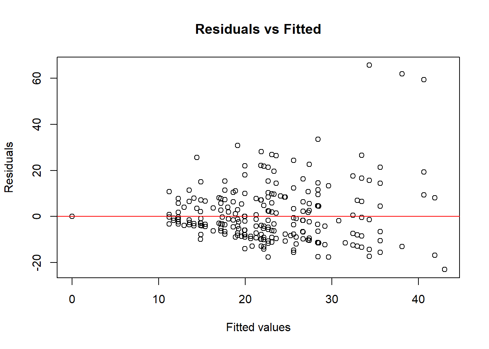
qqnorm(residuals_zi_pois)
qqline(residuals_zi_pois, col = "red")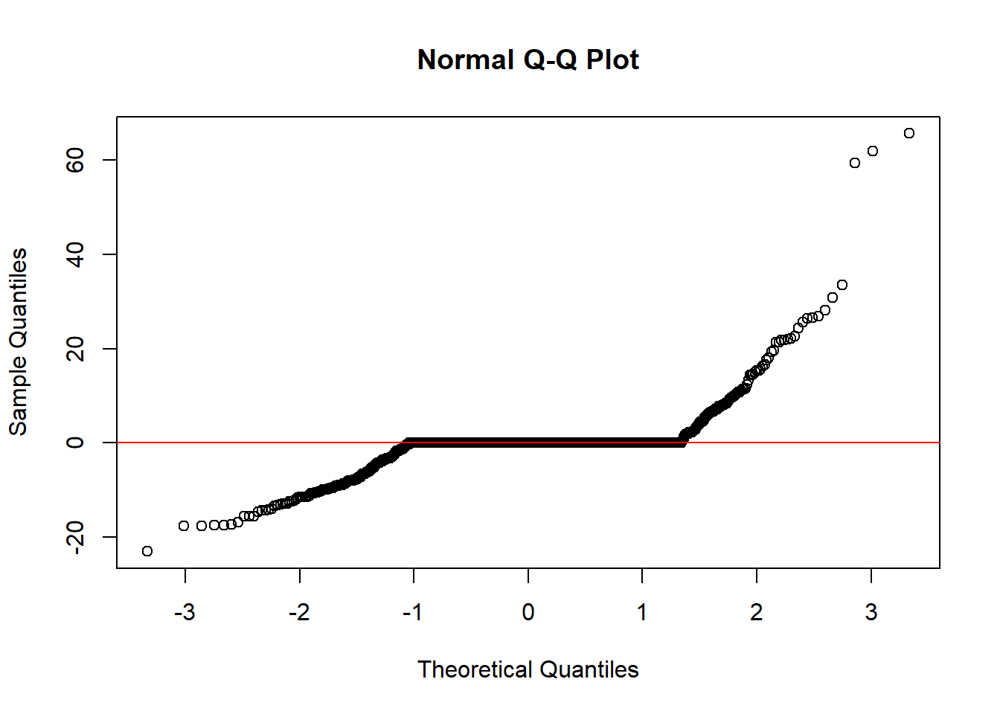
The deviance of the residuals from the QQ line is concerning…could just be zero-inflated model fit.
My next step is to remove the outliers and try refitting my models.
Removing Outliers and refitting zero-inflated poisson model.
I’m only refitting my best zero-inflated poisson model as that had the overall lowest AIC score.
Removing outliers
data_rm_outliers <- data[-c(61, 485, 75), ]Refitting best zero-inflated negative binomial model
# Full Model with nested random effects for Field and Plot
zi_pois_pd_outliers <- glmmTMB(pd_round ~ Treatment * WAT + (1 | Plot) + (1 | Field), zi = ~pd_round,
family = poisson, data = data_rm_outliers)Summary of best fitted model
summary(zi_pois_pd_outliers) Family: poisson ( log )
Formula: pd_round ~ Treatment * WAT + (1 | Plot) + (1 | Field)
Zero inflation: ~pd_round
Data: data_rm_outliers
AIC BIC logLik deviance df.resid
2529.6 2570.1 -1256.8 2513.6 1155
Random effects:
Conditional model:
Groups Name Variance Std.Dev.
Plot (Intercept) 0.03933 0.1983
Field (Intercept) 0.01744 0.1321
Number of obs: 1163, groups: Plot, 20; Field, 3
Conditional model:
Estimate Std. Error z value Pr(>|z|)
(Intercept) 3.60692 0.11135 32.39 < 2e-16 ***
Treatment1 -0.33059 0.12659 -2.61 0.009017 **
WAT -0.18847 0.01738 -10.85 < 2e-16 ***
Treatment1:WAT 0.09868 0.02918 3.38 0.000721 ***
---
Signif. codes: 0 '***' 0.001 '**' 0.01 '*' 0.05 '.' 0.1 ' ' 1
Zero-inflation model:
Estimate Std. Error z value Pr(>|z|)
(Intercept) 22.322 2362.854 0.009 0.992
pd_round -8.963 10835.100 -0.001 0.999Increased model significance for all predictor variables!
Difference in AIC between zero-inflated model and zero-inflated model with outliers removed
AIC(zi_pois_pd_5, zi_pois_pd_outliers)Warning in AIC.default(zi_pois_pd_5, zi_pois_pd_outliers): models are not all
fitted to the same number of observations df AIC
zi_pois_pd_5 8 2798.319
zi_pois_pd_outliers 8 2529.585AIC score for model without outliers is ~270 points lower.
Model Diagnostics
Extracting model residuals
# Extract residuals
residuals_zi_pois_outlier <- resid(zi_pois_pd_outliers)
fitted_zi_pois_outier <- fitted(zi_pois_pd_outliers)
# Plot residuals vs fitted values
plot(fitted_zi_pois_outier, residuals_zi_pois_outlier, xlab = "Fitted values", ylab = "Residuals",
main = "Residuals vs Fitted")
abline(h = 0, col = "red")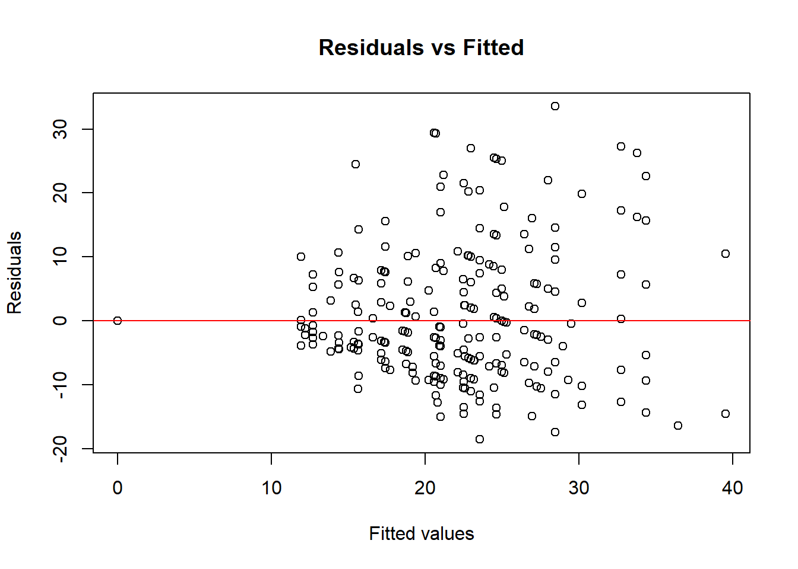
qqnorm(residuals_zi_pois_outlier)
qqline(residuals_zi_pois_outlier, col = "red")Plotted Q-Q plot residuals looks slightly better.
Checking for Over Dispersion
# Simulate residuals for the fitted model
sim_res <- simulateResiduals(fittedModel = zi_pois_pd_outliers)# Plot residuals
plot(sim_res)DHARMa:testOutliers with type = binomial may have inflated Type I error rates for integer-valued distributions. To get a more exact result, it is recommended to re-run testOutliers with type = 'bootstrap'. See ?testOutliers for details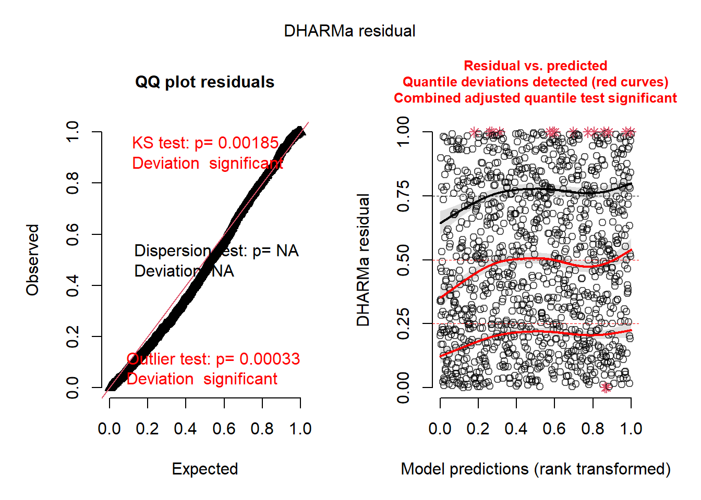
Test for over dispersion failed, issues with code…
Incoorporating binary variable to account for added plants after week 2
data_rm_outliers$num_plants_change <- ifelse(data_rm_outliers$WAT >= 2, 1, 0) Rerunning best model with binary variable
zi_pois_adjusted <- glmmTMB(pd_round ~ Treatment * WAT + num_plants_change +
(1 | Field) + (1 | Plot),
zi = ~pd_round,
family = poisson,
data = data_rm_outliers) Model Diagnostics
AIC(zi_pois_adjusted)[1] 2527.698AIC with of model with binary variable is slightly lower then without (~2 points lower)
summary(zi_pois_adjusted) Family: poisson ( log )
Formula:
pd_round ~ Treatment * WAT + num_plants_change + (1 | Field) + (1 | Plot)
Zero inflation: ~pd_round
Data: data_rm_outliers
AIC BIC logLik deviance df.resid
2527.7 2573.2 -1254.8 2509.7 1154
Random effects:
Conditional model:
Groups Name Variance Std.Dev.
Field (Intercept) 0.01696 0.1302
Plot (Intercept) 0.03858 0.1964
Number of obs: 1163, groups: Field, 3; Plot, 20
Conditional model:
Estimate Std. Error z value Pr(>|z|)
(Intercept) 3.56716 0.11244 31.73 < 2e-16 ***
Treatment1 -0.36786 0.12777 -2.88 0.003989 **
WAT -0.21028 0.02067 -10.17 < 2e-16 ***
num_plants_change 0.11283 0.05755 1.96 0.049916 *
Treatment1:WAT 0.10976 0.02993 3.67 0.000245 ***
---
Signif. codes: 0 '***' 0.001 '**' 0.01 '*' 0.05 '.' 0.1 ' ' 1
Zero-inflation model:
Estimate Std. Error z value Pr(>|z|)
(Intercept) 22.903 3159.571 0.007 0.994
pd_round -9.651 45209.061 0.000 1.000# Extract residuals
residuals_zi_pois_adjusted <- resid(zi_pois_adjusted)
fitted_zi_pois_adjusted <- fitted(zi_pois_adjusted)
# Plot residuals vs fitted values
plot(fitted_zi_pois_adjusted, residuals_zi_pois_adjusted, xlab = "Fitted values", ylab = "Residuals",
main = "Residuals vs Fitted")
abline(h = 0, col = "red")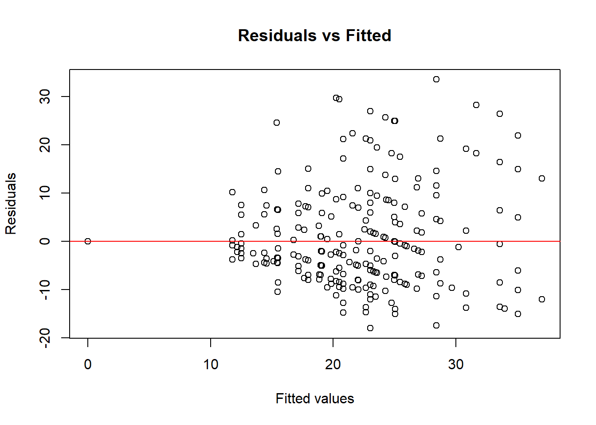
# Normal QQ Plot
qqnorm(residuals_zi_pois_adjusted)
qqline(residuals_zi_pois_adjusted, col = "red")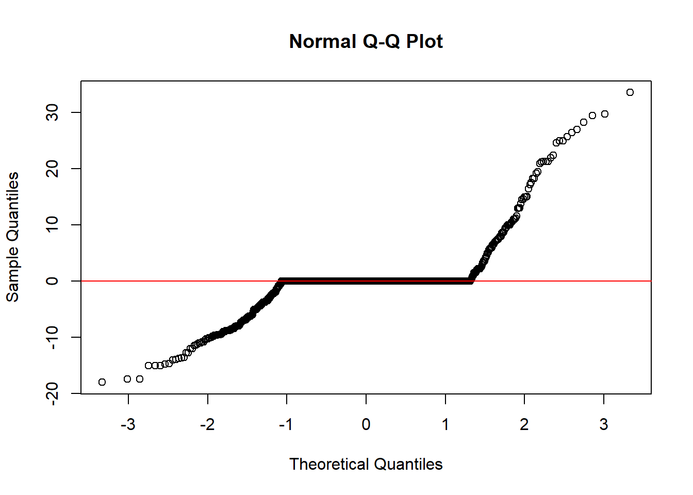